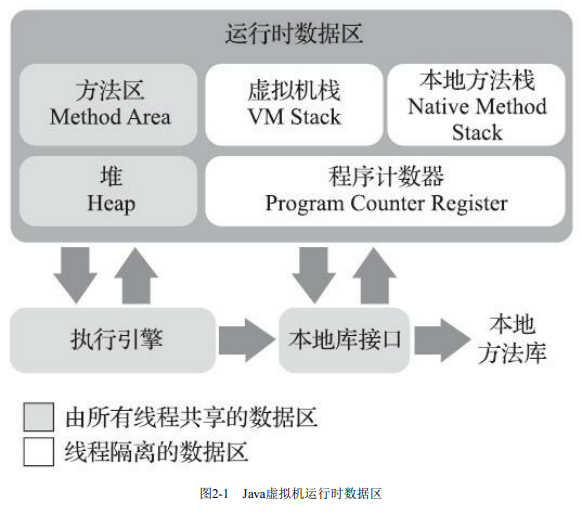

Introduction
第1章-走进Java
第2章-Java内存区域与内存溢出异常
Published with GitBook
第2章-Java内存区域与内存溢出异常
1.
Java内存区域与内存溢出异常
1.1.
运行时数据区域
1.1.1.
程序计数器
1. Java内存区域与内存溢出异常
1.1. 运行时数据区域
根据《Java虚拟机规范》，Java虚拟机所管理的内存将会包含如下几个运行时数据区域：

1.1.1. 程序计数器
程序计数器可以看作是当前线程所执行字节码的行号指示器，也是程序控制流的指示器
每条线程都会有一个独立的程序计数器，各条线程之间互不影响，独立存储
如果线程正在执行一个Java方法，PC记录的是正在执行的虚拟机字节码指令的地址；如果正在执行的是本地方法，PC值为空(Undefined)
results matching "
"
No results matching "
"